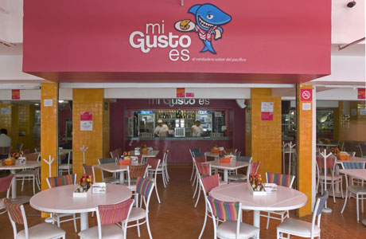

Restaurante mi gusto es

En el 2003 este negocio inició como un pequeño restaurante de mariscos
con capacidad para atender únicamente cinco mesas, actualmente Mi Gusto
Es ya es una cadena con tres marcas comerciales y 17 sucursales en la
República Mexicana que atienden mensualmente a más de 80 mil comensales.
Pruebe nuestra deliciosa comida, encargos por internet, servicio a domicilio en
tepatitlan de morelos.